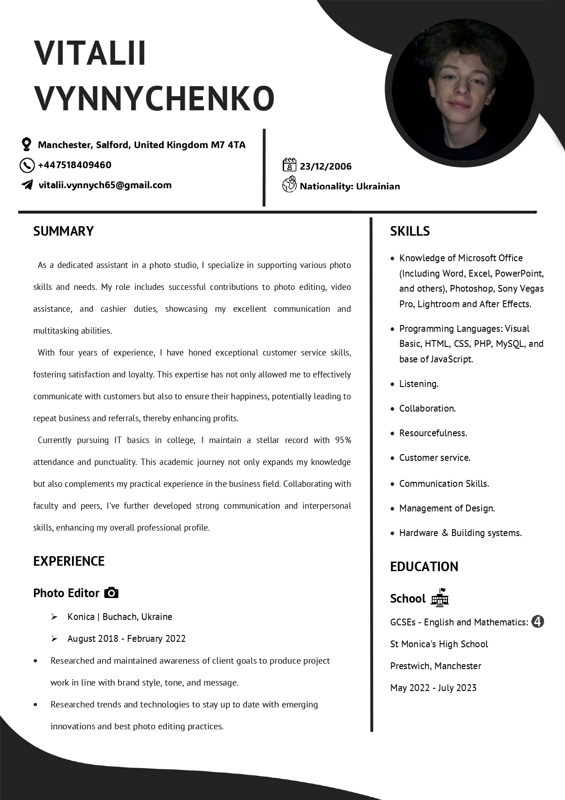
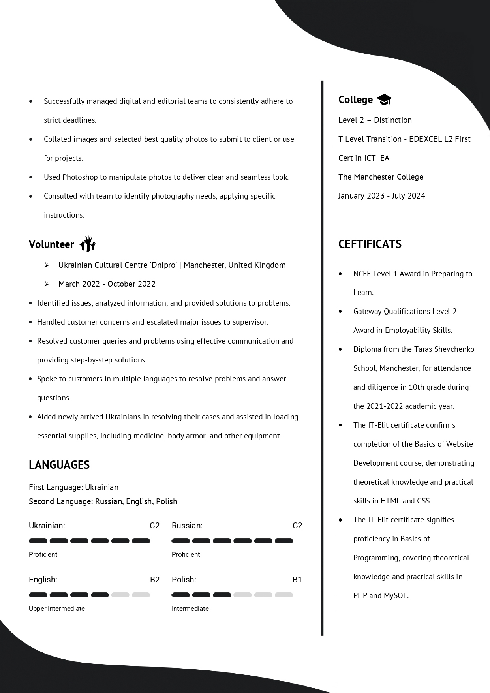
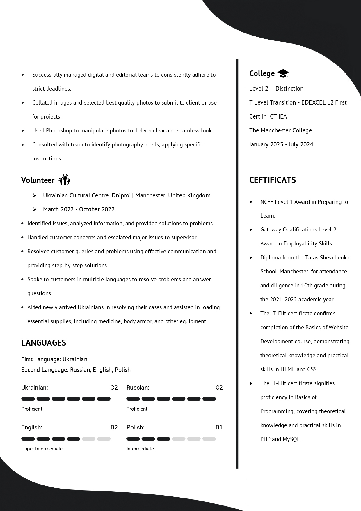

---
Regarding me
Vitalii Vynnychenko
Location: Manchester, Salford, United Kingdom
Contact: +447518409460 | vitalii.vynnych65@gmail.com
With a wealth of experience and a passion for excellence, I bring a unique blend of technical skills, customer service expertise, and creative talent to the table. As a dedicated assistant in a photo studio, I have honed my abilities in photo editing, video assistance, and customer service over the past four years. My commitment to quality and client satisfaction has consistently driven me to exceed expectations and contribute to the success of each project I undertake.
Professional Experience
Photo Editor at Konica, Buchach, Ukraine (August 2018 - February 2022) At Konica, I played a pivotal role in aligning project work with client goals, staying abreast of the latest trends and technologies, and ensuring that all deliverables met high standards of quality and punctuality. My proficiency in tools like Photoshop allowed me to create seamless and compelling visuals that resonated with our audience.
Volunteer at Ukrainian Cultural Centre 'Dnipro', Manchester, UK (March 2022 - October 2022) My volunteer work involved problem-solving, effective communication, and supporting newly arrived Ukrainians. I handled customer queries, provided multi-language assistance, and helped distribute essential supplies.
Skills and Languages
Technical Skills:
- Proficient in Microsoft Office Suite (Word, Excel, PowerPoint), Adobe Photoshop, Sony Vegas Pro, Lightroom, and After Effects.
- Experienced in programming with Visual Basic, HTML, CSS, PHP, MySQL, and JavaScript fundamentals.
Languages:
- Ukrainian: Proficient (C2)
- Russian: Proficient (C2)
- English: Upper Intermediate (B2)
- Polish: Intermediate (B1)
Education
St Monica's High School, Prestwich, Manchester
- GCSEs in English and Mathematics (May 2022 - July 2023)
The Manchester College
- Level 2 – Distinction in T Level Transition - EDEXCEL L2 First Cert in ICT IEA (January 2023 - July 2024)
Certifications
- NCFE Level 1 Award in Preparing to Learn
- Diploma from Taras Shevchenko School, Manchester
- Basics of Website Development (IT-Elit)
- Basics of Programming (IT-Elit)
Personal Attributes
I am known for my excellent communication and multitasking abilities, strong customer service skills, and a resourceful approach to problem-solving. My ongoing pursuit of IT basics in college complements my practical experience, making me a well-rounded professional capable of tackling diverse challenges in the business and creative fields.